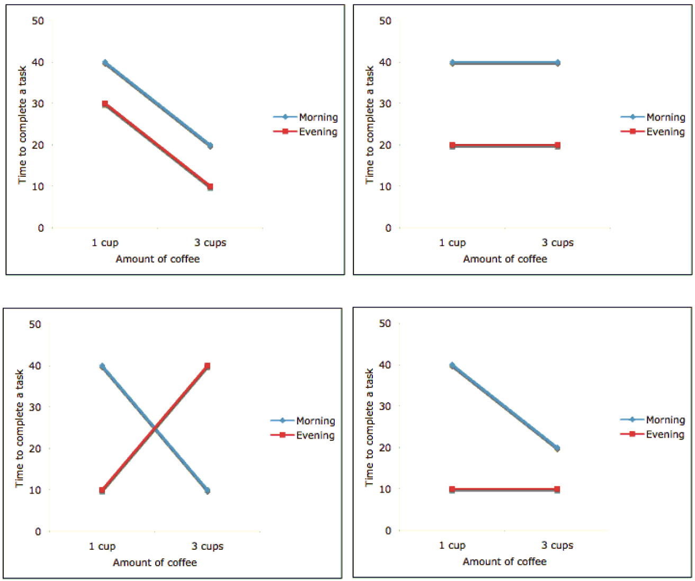
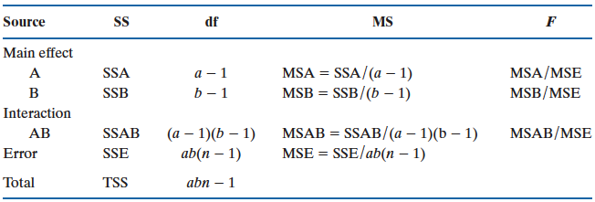
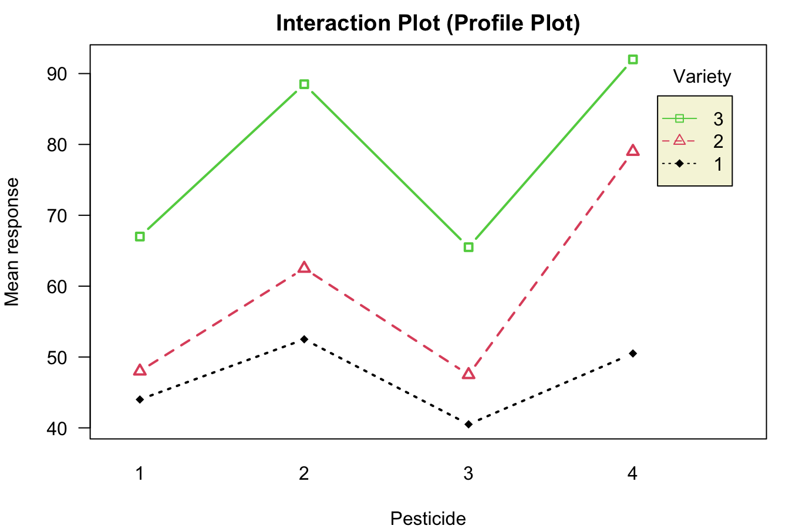

25 Two-Way ANOVA*
Often we want to examine the effect of two or more factors (treatments or explanatory variables) on a response variable \(y\). For example,
Is cholesterol level (\(y\)) affected by gender (factor 1) and/or age (factor 2) ?
Is body temperature (\(y\)) affected by gender (factor 1) and/or smoking or not (factor 2) ?
In both examples, there are two factors. We want to know how the response variable changes with the two factors.
The question arises: why not simply conduct a one-way ANOVA for each factor separately? The reason is that performing two separate one-way ANOVA tests wastes the information provided by the other factor. For example, when we conduct a one-way ANOVA on cholesterol levels using only the factor of gender, the model completely ignores the age information that could be extracted from the data. This additional information could significantly enhance our ability to make more accurate inferences about the population means. By considering both factors simultaneously in a more comprehensive model, we utilize all the available data, leading to better-informed and more reliable conclusions.
More importantly, this one-way ANOVA approach completely overlooks a crucial aspect: the potential interaction between the two factors. What does interaction mean? An interaction between two factors exists if the effect of one factor on the response varies depending on the categories or levels of the other factor. Ignoring this interaction can lead to an incomplete understanding of how the factors jointly influence the outcome, potentially missing key insights into the relationships within the data.
When the data includes two or three factors that may all influence the response variable, it is generally more effective to construct a two-way or three-way ANOVA model rather than fitting separate one-way ANOVA models for each factor. This approach allows for a more comprehensive analysis that accounts for potential interactions between the factors. However, it’s important to note that including more than three factors in a single ANOVA model can make the model quite complex, and the results can become much more challenging to interpret.
In this chapter, we provide a brief introduction to two-way ANOVA. For more advanced ANOVA models, such as those involving multiple factors or interactions, further study is recommended through a dedicated course on Design of Experiments, Analysis of Variances, or Statistical Linear Models.
25.1 Interaction Effect
When two factors are included in a model, understanding their interaction effect is crucial. Let’s consider an example. Suppose we have two factors: the Amount of coffee consumed (either one cup or three cups a day) and When the coffee is consumed (either in the morning or in the evening). We want to examine how these two factors affect the length of time it takes to complete a specific task. By analyzing the interaction between these factors, we can determine whether the effect of coffee consumption on task completion time varies depending on the time of day the coffee is consumed. This insight is key to understanding the combined influence of the factors on the response variable.
Figure 25.1 shows some possible interaction plots. The top row shows two interaction plots without an interaction effect. The bottom two, on the other hand, are the plots with some interaction effect.
The topleft plots shows, when amount of coffee consumed increases from 1 cup to 3 cups, the time to complete a task is shortened and the amount of time shortened when the coffee is consumed in the morning is the same as the amount of time shortened when the coffee is consumed in the evening. Both shorten 20 minutes. With the morning, the time is shortened from 40 to 20. With the evening, the time is shortened from 30 to 10. Therefore, the effect of amount of coffee on the time to complete a task does not depend on the other factor: when the coffee is consumed, whether it is morning or evening.
The top-left plot illustrates a scenario where increasing the amount of coffee consumed from 1 cup to 3 cups results in a shorter time to complete a task. Importantly, the reduction in time is the same regardless of when the coffee is consumed—whether in the morning or in the evening. Specifically, the task completion time decreases by 20 minutes in both cases: from 40 to 20 minutes in the morning, and from 30 to 10 minutes in the evening. This indicates that the effect of the amount of coffee consumed on the time to complete a task is independent of the time of consumption—morning or evening. There is no interaction effect between the two factors in this scenario.
We know that increasing the amount of coffee consumed from 1 cup to 3 cups shortens the time to complete a task. Now, if we compare drinking coffee in the evening to drinking it in the morning, we find that the evening saves 10 minutes. This is illustrated by the red line (representing “evening”) consistently being 10 minutes below the blue line (representing “morning”) across all levels of coffee consumption.
To assess the effect of the factor “Amount of coffee,” we simply pick a line (either red or blue) and observe how the response value (time to complete the task) changes as we move along the x-axis (number of cups of coffee). To evaluate the effect of the other factor, “Drinking coffee time,” we examine the vertical distance between the two lines. In this case, the distance between the lines is consistently 10 minutes, regardless of whether we measure it at 1 cup or 3 cups of coffee. This consistency indicates that the time of day when coffee is consumed has a uniform effect on task completion time, independent of the amount of coffee consumed.
Now, let’s examine the top-right plot. This plot also indicates no interaction effect. The time required to complete the task is the same whether a person drinks 1 cup of coffee or 3 cups of coffee. In other words, the amount of coffee consumed has no effect on the task completion time. The response variable (task completion time) is independent of the amount of coffee consumed.
Moreover, this lack of effect holds true regardless of whether the coffee is consumed in the morning or the evening, as shown by the two parallel lines in the plot. The parallel lines indicate that there is no interaction effect between the time of coffee consumption and the amount of coffee consumed. The task completion time remains unchanged across different amounts of coffee, and this relationship is consistent in both the morning and evening scenarios.
The time required to complete a task is 20 minutes shorter when drinking coffee in the morning, as indicated by the vertical distance of 20 between the two lines. This 20-minute difference is consistent regardless of the number of coffee cups consumed, reinforcing that there is no interaction between the amount of coffee consumed and the time of consumption. The lack of interaction means that the effect of drinking coffee in the morning versus the evening remains constant, irrespective of the quantity of coffee.
At the bottom left, the effect of the amount of coffee on the time needed to complete a task does depend on when the coffee is consumed, indicating a clear interaction effect. Specifically, if coffee is consumed in the evening, drinking more coffee actually worsens working efficiency, requiring 30 minutes longer to complete a task. In contrast, the effect of consuming coffee in the morning is entirely different—drinking more coffee (3 cups) reduces the time needed to complete a task, thereby improving working efficiency.
This demonstrates that there is an interaction effect between the amount of coffee consumed and the time of consumption. In this scenario, it is not possible to draw a conclusion about the effect of one factor (e.g., the amount of coffee) on the response variable (task completion time) without considering the other factor (e.g., time of consumption). Different times of consumption lead to entirely different conclusions about the impact of the amount of coffee consumed, underscoring the importance of accounting for both factors in the analysis.
The bottom right plot also demonstrates an interaction effect. When coffee is consumed in the evening, the amount of coffee has no effect on the time needed to complete a task, as indicated by the horizontal line segment. However, when coffee is consumed in the morning, the situation changes—drinking 3 cups of coffee reduces the time required to complete the task.
This difference in outcomes based on the time of coffee consumption indicates that there is indeed an interaction between the two factors. The impact of the amount of coffee consumed on task completion time varies depending on whether the coffee is consumed in the morning or evening, highlighting the importance of considering both factors together when analyzing their effects.
In summary, in practice, if the line segments are approximately parallel, it suggests that there is little to no interaction effect between the factors. Conversely, if the two lines are not parallel, this indicates the presence of some interaction effect, as illustrated in the bottom of the figure. The degree of interaction is reflected in how much the lines diverge from being parallel.
25.2 Two-Way ANOVA Model*
Suppose we have two factors A and B, having a and b levels respectively. The two-way ANOVA model includes not only the two treatment effects but also their interaction term:
\[y_{ijk} = \mu + \alpha_i + \beta_j + \gamma_{ij} + \epsilon_{ijk}, ~ i = 1, \dots, a, ~ j = 1, \dots, b, ~k = 1, \dots, n.\]
\(y_{ijk}\): the response value from the \(k\)-th experimental unit receiving the \(i\)-th level of factor A and the \(j\)-th level of factor B.
\(\mu\): overall mean, an unknown constant.
\(\alpha_i\): effect due to the \(i\)-th level of factor A, an unknown constant, \(i = 1, \dots, a\).
\(\beta_j\): effect due to the \(j\)-th level of factor B, an unknown constant, \(j = 1, \dots, b\).
\(\gamma_{ij}\): interaction effect of the \(i\)-th level of factor A with the \(j\)-th level of factor B, an unknown constant.
\(\epsilon_{ijk}\): random error
\(\mu_{ij}\): the \((i, j)\) treatment mean, which is equal to \(\mu + \alpha_i + \beta_j + \gamma_{ij}\). Note that the \((i, j)\) treatment mean level is affected by which level of the two factors it measures, due to not only their main effect but also their interaction effect.
Assumptions: \(\epsilon_{ijk}\)s are independent and \(\epsilon_{ijk} \sim N(0, \sigma^2)\). Like one-way ANOVA, all errors are from the same normal distribution with mean zero and some common variance \(\sigma^2\), no matter what they come from which group or which data replicate.
Note
For simplicity, here we only consider equal sample size case. That is, the number of replications is the same for all ab treatments. The model and its analysis results may not be generalized to the case when the number of replications are different in different sub groups.
25.3 Two-Way ANOVA Model Example
\(y_{ijk} = \mu + \alpha_i + \beta_j + \gamma_{ij} + \epsilon_{ijk}\), \(i = 1, \dots, a\), \(j = 1, \dots, b\), \(k = 1, \dots, n\).
Factor A: amount of coffee. We have 2 levels and \(a = 2\). Let 1 = 1 cup and 2 = 3 cups.
Factor B: drinking time. We have 2 levels and \(b = 2\). Let 1 = morning and 2 = evening.
Response variable: time required to complete a task.
\(y_{124}\): the \(4\)-th response value (\(k = 4\)) that 1 cup of coffee is consumed (\(i = 1\)) and the drinking time is evening (\(j = 2\)).
\(\alpha_1\): effect of amount of coffee when 1 cup (\(i = 1\)) is consumed.
\(\beta_2\): effect of drinking time when coffee is consumed in the evening (\(j = 2\)).
\(\gamma_{12}\): interaction effect of having 1 cup of coffee in the evening \((i = 1\) and \(j = 2)\).
\(\mu_{12}\): the \((1, 2)\) treatment mean, which is equal to \(\mu + \alpha_1 + \beta_2 + \gamma_{12}\). The mean time to complete a task when having 1 cup of coffee in the evening.
25.4 Testings of Two-Way ANOVA
In two-way ANOVA, we need to first test the existence of interaction effect. That is
- \(\begin{align} &H_0: \gamma_{ij} = 0 \text{ for all } i, j\\ &H_1: \text{As least one }\gamma_{ij} \ne 0 \end{align}\)
If the interaction is significant, then the main factor effects of A or B may have no interpretation at all. The main effects must be interpreted very carefully and considered level by level. As we did explaining interaction plots, we should check the effect of factors case by case. There is no really main effect in interaction exists.
If the interaction is not significant, we can test the main effects of the two factors.
\(\begin{align} &H_0: \alpha_{i} = 0 \text{ for all } i\\ &H_1: \text{As least one } \alpha_{i} \ne 0 \end{align}\)
\(\begin{align} &H_0: \beta_{j} = 0 \text{ for all } j\\ &H_1: \text{As least one } \beta_{j} \ne 0 \end{align}\)
25.5 Two-Way ANOVA Table

Figure 25.2 shows the two-way ANOVA table. The source of variation of the response is decomposed into four parts, the main effect of factor A \((SSA)\), the main effect of factor B \((SSB)\), the interaction effect \((SSAB)\), and the unexplained random error variation \((SSE)\). Therefore we have
\[TSS = SSA + SSB + SSAB + SSE\] The corresponding degrees of freedom and mean squares are shown in the table.
To test interaction effect, use \(F_{test} = \frac{MSAB}{MSE}\) with \(df_1 = (a-1)(b-1)\) and \(df_2 = ab(n-1)\).
To test main effect of factor A, use \(F_{test} = \frac{MSA}{MSE}\) with \(df_1 = a-1\) and \(df_2 = ab(n-1)\).
To test main effect of factor B, use \(F_{test} = \frac{MSB}{MSE}\) with \(df_1 = b-1\) and \(df_2 = ab(n-1)\).
25.6 Example of Two-way ANOVA (Example 14.6 in SMD)
Determine the effects of 4 different pesticides on the yield of fruit from 3 different varieties of a citrus tree. Eight trees from each variety were randomly selected from an orchard. The 4 pesticides were then randomly assigned to 2 trees of each variety, and applications were made according to recommended levels. The data are saved in the R data frame data_pesticide.
data_pesticide Yield Variety Pesticide
1 49 1 1
2 50 1 2
3 43 1 3
4 53 1 4
5 39 1 1
6 55 1 2
7 38 1 3
8 48 1 4
9 55 2 1
10 67 2 2
11 53 2 3
12 85 2 4
13 41 2 1
14 58 2 2
15 42 2 3
16 73 2 4
17 66 3 1
18 85 3 2
19 69 3 3
20 85 3 4
21 68 3 1
22 92 3 2
23 62 3 3
24 99 3 4str(data_pesticide)'data.frame': 24 obs. of 3 variables:
$ Yield : num 49 50 43 53 39 55 38 48 55 67 ...
$ Variety : Factor w/ 3 levels "1","2","3": 1 1 1 1 1 1 1 1 2 2 ...
$ Pesticide: Factor w/ 4 levels "1","2","3","4": 1 2 3 4 1 2 3 4 1 2 ...Note that the two factors need to be a vector of type character or factor. To fit a two-way ANOVA, we can use aov() function. In the formula, we use Pesticide * Variety to tell aov() to do two-way ANOVA with interaction. This is equivalent to Pesticide + Variety + Pesticide:Variety, where each variable name represents their main effect, and Pesticide:Variety is the specific interaction term. If we put Yield ~ Pesticide + Variety in the formula, a two-way ANOVA without interaction is performed.
The ANOVA table is generated by summary(twoway_fit). We first look at the interaction term. The p-value is greater than 0.05 and we have insufficient evidence to indicate an interaction between pesticide levels and variety of trees levels.
Df Sum Sq Mean Sq F value Pr(>F)
Pesticide 3 2227 742.5 17.556 0.00011 ***
Variety 2 3996 1998.0 47.244 2.05e-06 ***
Pesticide:Variety 6 457 76.2 1.801 0.18168
Residuals 12 508 42.3
---
Signif. codes: 0 '***' 0.001 '**' 0.01 '*' 0.05 '.' 0.1 ' ' 1Because interaction is not significant, we then can test the main effects of the 2 factors. The first row tests the main effect of Pesticide, and the second row tests the main effect of Variety. Both effects are significant. We conclude that there is a difference in mean yields among 4 pesticides and there is a difference in mean yields among 3 varieties of trees.
Lastly, we can use command interaction.plot() to generate the interaction plot or the profile plot.
interaction.plot(x.factor = data_pesticide$Pesticide,
trace.factor = data_pesticide$Variety,
response = data_pesticide$Yield,
trace.label = "Variety",
type = "b", col = 1:3, leg.bty = "o", leg.bg = "beige", lwd = 2,
las = 1, pch = c(18, 24, 22),
xlab = "Pesticide", ylab = "Mean response",
main = "Interaction Plot (Profile Plot)")
The three lines are more or less parallel with each other, and no significant interaction is out there. Although Variety 3 would have large response changes with different types of pesticide, especially compared to Variety 1, such difference is not significant enough for the model to conclusion that the interaction exists, given the samll sample size in each group.